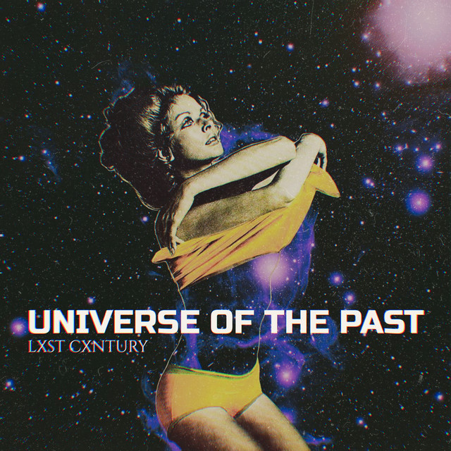

Профіль
користувача
Налаштування
Повернутися назад
Останній лайкнутий альбом:
BONES - Champion
Інформація про користувача
Улюблений жанр
Улюблений автор
Улюблений альбом
Загальний час музики

Spotify
Spotify
Spotify
-
PHONK
Lxst Cxntury
Universe of the past
999 h.